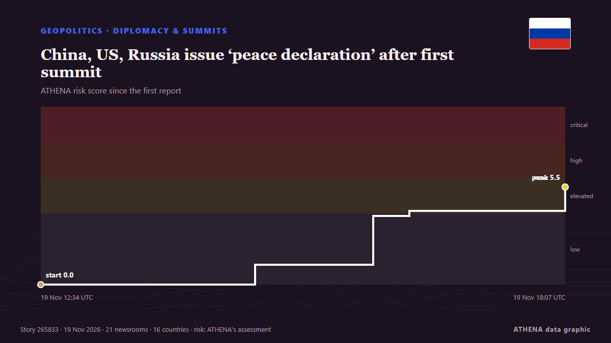

Διπλωματία & σύνοδοι
ΧορηγούμενοΠαρουσιάζεται από  Cybernetics and Artificial Intelligence Lab Welcome to the Cybernetics and Artificial Intelligence Laboratory, established at the Department of Business Administration of the National and Kapodistrian University of Athens. The lab is headed by Professor Dimitrios Thomakos. The lab aims to do research that can be published in top venues. Our research uses tools and methods of Artificial Intelligence, and lies in the following areas: - Forecasting - Decision making - Cyber security - Finance We are always looking forward to collaborating with exceptional students!
Cybernetics and Artificial Intelligence Lab Welcome to the Cybernetics and Artificial Intelligence Laboratory, established at the Department of Business Administration of the National and Kapodistrian University of Athens. The lab is headed by Professor Dimitrios Thomakos. The lab aims to do research that can be published in top venues. Our research uses tools and methods of Artificial Intelligence, and lies in the following areas: - Forecasting - Decision making - Cyber security - Finance We are always looking forward to collaborating with exceptional students!
| 6 Νοε | 0 |
|---|---|
| 7 Νοε | 0 |
| 8 Νοε | 1 |
| 9 Νοε | 0 |
| 10 Νοε | 0 |
| 11 Νοε | 0 |
| 12 Νοε | 0 |
| 13 Νοε | 1 |
| 14 Νοε | 1 |
| 15 Νοε | 1 |
| 16 Νοε | 7 |
| 17 Νοε | 10 |
| 18 Νοε | 2 |
| 19 Νοε | 1 |
Οι τίτλοι των ειδήσεων παρουσιάζονται στα αγγλικά, όπως δημοσιεύτηκαν.

China, US, Russia issue ‘peace declaration’ after first summit
China, the United States and Russia issued a "peace declaration" Thursday following an unprecedented leaders' summit of Trump Xi and Putin. από Vanguard
APEC Summit: Trump meets Putin ahead of high-stakes trilateral talks with Xi
Negotiations on a trade deal between the two allies were not mentioned in any of the schedules released by either country. από The Jerusalem Post
Trilateral meeting between Trump, Xi and Putin held in Shenzhen
Kremlin spokesman says Russian, Chinese and US presidents will meet on sidelines of APEC summit. από Anadolu Agency (English)
Xi meets Trump in China's Shenzhen
On Thursday evening November the 19th in Shenzhen, Trump, Xi and Putin will sit in the same room for the first time. από FXStreet
US, China want to help end Ukraine war: Trump
Ukrainian president says US and China have means to pressure Moscow into ending conflict. από Anadolu Agency (English)
Jared Kushner and Steve Witkoff to meet with Ukrainian and European officials
U.S. envoys Jared Kushner and Steve Witkoff are due to meet with Ukrainian and European officials in Berlin, as the war delivers more airstrikes to Ukraine and Russia. από NPR World
Trump meets Xi after Putin talks as leaders discuss ending Ukraine war
President Trump plans to discuss Ukraine with the leaders of Russia and China. από The New York Times (World)
Trump arrives in China for historic meeting with Xi, Putin
President Donald Trump in Shenzhen for historic trilateral talks with Chinese leader Xi Jinping and Russia's Vladimir Putin. από CNBC World
Lee, Xi hold their 3rd summit on sidelines of APEC gatherings
SHENZHEN, China — President Lee Jae Myung began talks with Chinese President Xi Jinping Shenzhen, China, Wednesday, on the sidelines of the Asia-Pacific Economic Cooperation (APEC) leaders’ meeting. από The Korea Times
Opening ceremony of APEC CEO Summit 2026 held in Shenzhen
The Asia-Pacific Economic Cooperation (APEC) CEO Summit 2026 opened Tuesday in Shenzhen, south China's Guangdong Province, bringing together business and political leaders from across the… από CGTN (China)
Pakistani Man Sentenced to 27 Years in US Prison over Iran-Backed Plot to Kill Trump
A Pakistani man has been sentenced to 27 years and six months in a US federal prison for attempting to arrange the assassination of President Donald Trump and other American political figures in an… από Khaama Press
Trump warns Iran over report of ‘dirty bomb’ plot
President Trump warned the Iranian regime after a report that Iran was planning a ‘dirty bomb’ attack in Washington. από NBC News (World)
US President Trump arrives in Manila ahead of ASEAN summit
US President Donald Trump has landed in Manila ahead of a special ASEAN-US meeting. από Al Jazeera English
Ireland shouldn't give €25m to Ukraine when its electricity is 75% cheaper- Independent Ireland
Last week, the government committed another €25 million to Ukraine’s energy fund. από Irish Mirror
Trump praises Albanese as Quad unveils defence and minerals deals
With major talks in China approaching, US President Donald Trump, Anthony Albanese and their fellow Quad leaders deepen cooperation on defence and technology at a summit in Manila. από ABC News Australia
Oman, Iran Discuss Safeguarding Maritime Corridors
Muscat: Sayyid Badr bin Hamad al Busaidi, Foreign Minister, met Dr Abbas Araghchi, Foreign Minister of the Islamic Republic of Iran, at the Foreign Ministry's headquarters on Tuesd... από Oman Observer
Over 2,000 business, political representatives gather in Shenzhen for APEC CEO Summit 2026
Hong Kong will send one of its largest-ever delegations to the Apec CEO Summit in Shenzhen on Tuesday and Wednesday, with at least 54 business leaders set to attend, the South China Morning Post has… από South China Morning Post
US and Russia to oppose talks on limiting autonomous weapons
Major military nations argue that existing humanitarian law is enough to govern warfare. από The Straits Times
Trade war in focus at ASEAN summit ahead of Trump’s arrival
The late arrival of US President Donald J. από BusinessWorld